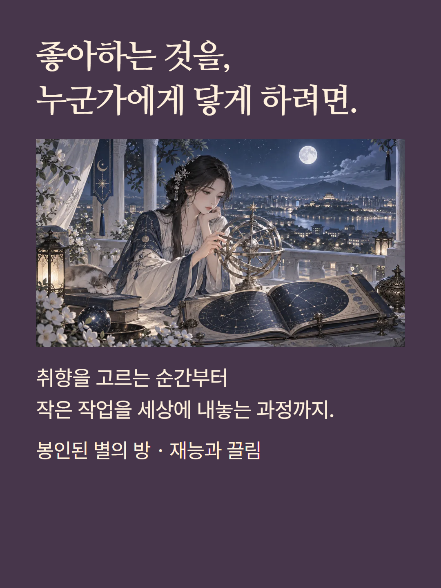
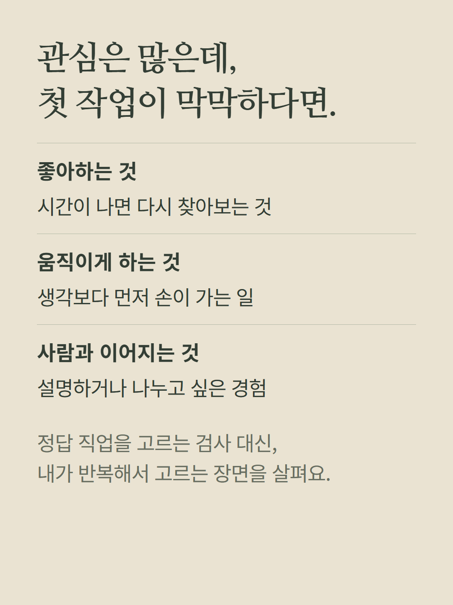
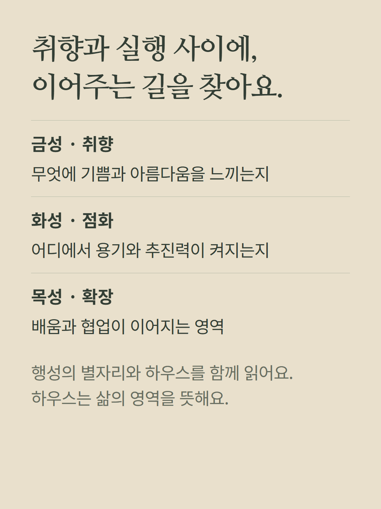
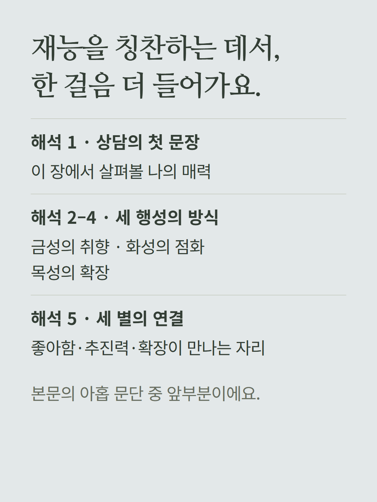
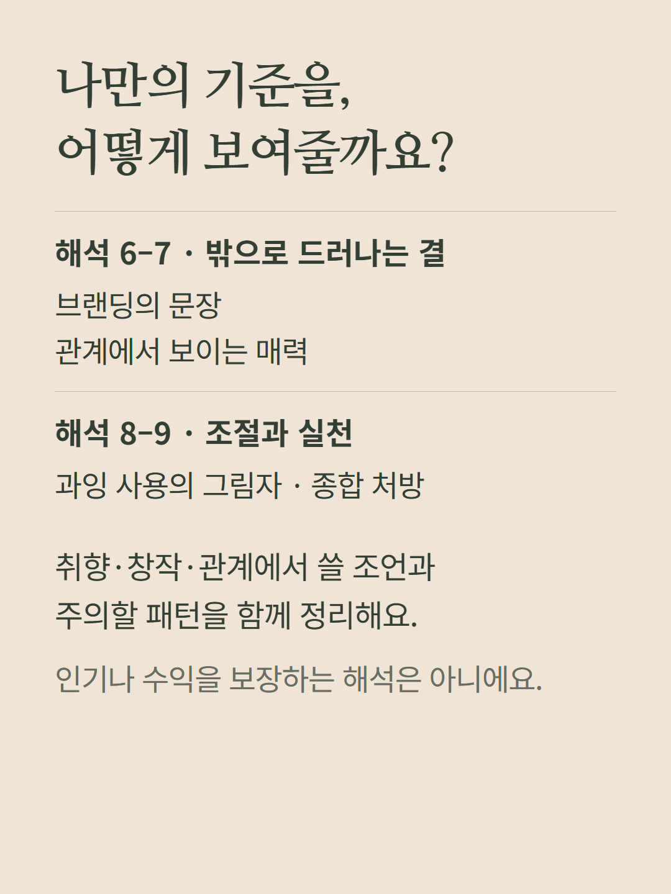
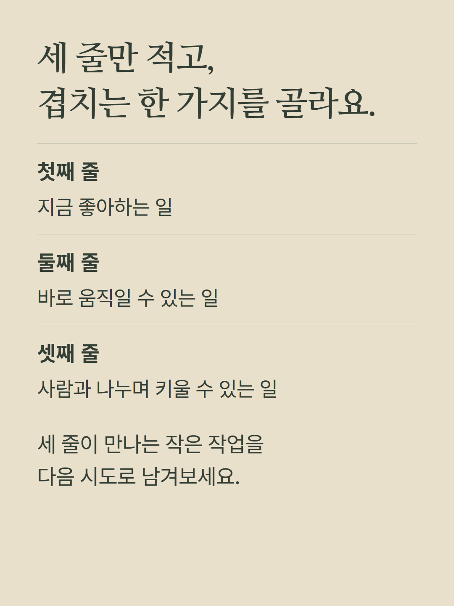
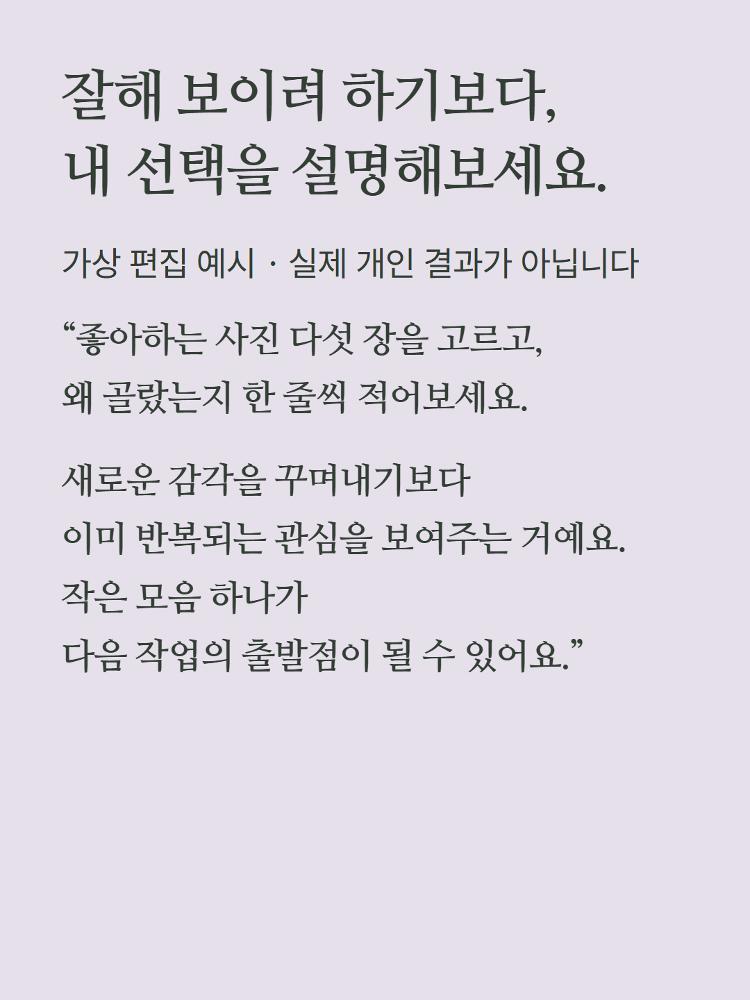
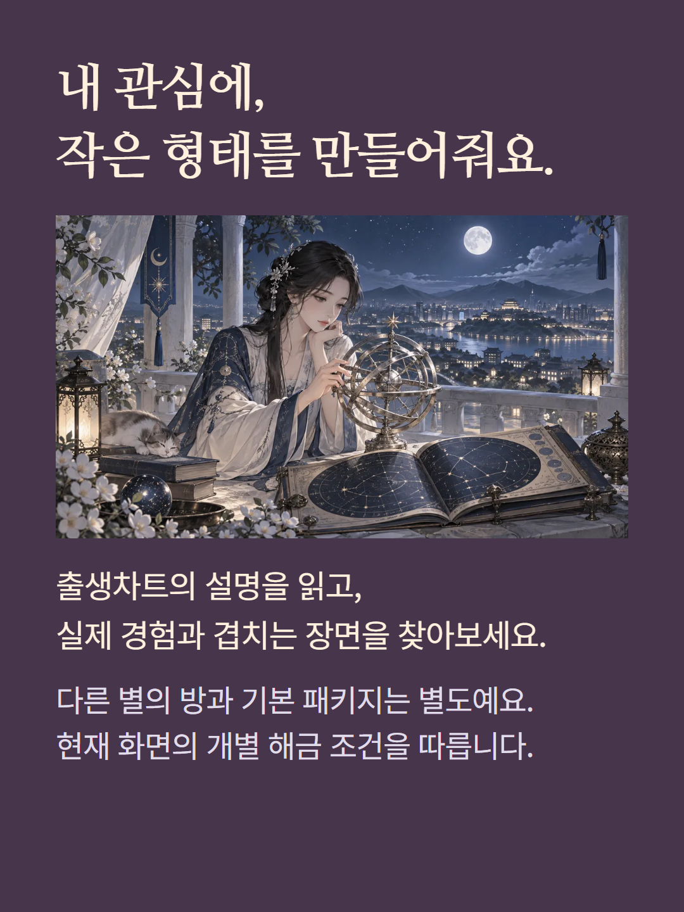

정상 점성술 화면의 개별 해금 항목입니다. 금성·화성·목성의 배치를 바탕으로 취향·실행·확장, 브랜딩과 관계에서 드러나는 매력, 과잉 사용의 주의점을 아홉 문단과 다섯 조언으로 읽습니다. 준비된 출생차트 해석이며 실시간 AI 상담이나 직업 적성 검사는 아닙니다. 출생시간·지역이 하우스에 영향을 줍니다. 기본 패키지와 다른 별의 방은 별도입니다. 가상 편집 예시를 포함하며 기존 가격·해금 정책을 따릅니다.